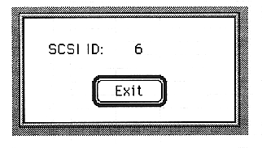
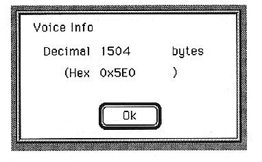

Return to previous page ｜ Return to menu ｜ Go to next page
-
Preference menu
-
SCSI Address
- Displays the current SCSI ID.

●Download
Download the sound data SCSPBIN format to the - SCSP board.
-
Voice Info
- Displays the total number of bytes of the tone data being edited.

Return to previous page ｜ Return to menu ｜ Go to next page